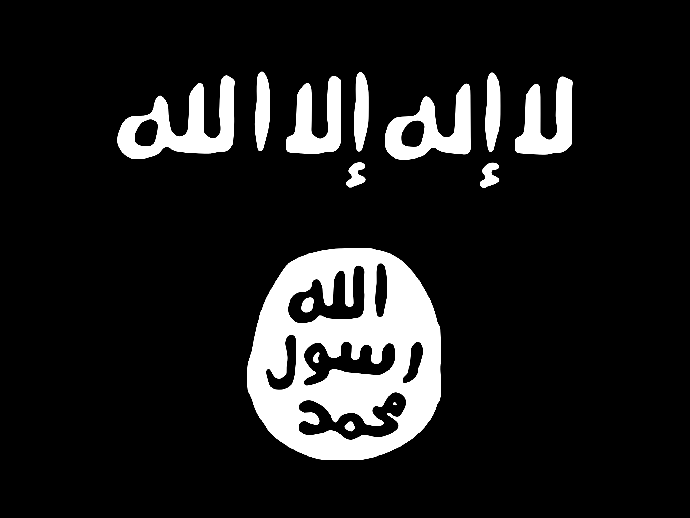

{{"Terrorism"}}
is defined as the use of violence, or threatened use of violence, in order to achieve a political, religious, or ideological aim. In recent times, terrorism is considered a major threat to society.
Team Members
Anton Tan Chan Siyin Daren Tan Jasmine Moh Low Zheng Yang
{{"Rising Danger"}}
Between 2000 and 2014, the number of terrorist attacks has been surging. Overall, the most number of deaths occurred in the Middle Eastern region. Use the visualisation below to explore the changes over the years as well as the variation between regions.

{{"Different Types of Attacks"}}
Terrorist attacks vary in terms of their weapon type, attack type, and target type. Use the visualisation below to explore more details regarding the terrorist attacks, as well as the variation over the years.

{{"Top Groups"}}
From 2000 to 2014, the top 5 terrorist groups that contributed most to the total number of terrorist attacks include Taliban, CPI-Maoist, Al-Shabaab, Boko Haram, and ISIL. Hover over their icon to find out more information about each group, and use the visualization below to explore the expansion of presence of these groups over the years.
The Taliban emerged in the early 1990s in northern Pakistan following the withdrawal of Soviet troops from Afghanistan. A predominantly Pashtun movement, the Taliban came to prominence in Afghanistan in the autumn of 1994.
The Taliban's promise - in Pashtun areas straddling Pakistan and Afghanistan - was to restore peace and security and enforce their own austere version of Sharia, or Islamic law, once in power.
" tooltip-side="right" tooltip-size="large" height="120" width="120"/> Communist Party of India - MaoistThe Communist Party of India (Maoist) is a Maoist insurgent communist party in India which aims to overthrow the government of India through people's war.
It was founded on 21 September 2004, through the merger of the Communist Party of India (Marxist–Leninist) People's War (People's War Group), and the Maoist Communist Centre of India (MCCI).
The CPI (Maoist) believes that the Indian state is being run by a collaboration of imperialists, the comprador bourgeoisie and feudal lords.
" tooltip-side="right" tooltip-size="large"/> Al-ShabaabAl-Shabaab is a jihadist terrorist group based in East Africa. In 2012, it pledged allegiance to the militant Islamist organization Al-Qaeda.
The group describes itself as waging jihad against Enemies of Islam, and is engaged in combat against the Federal Government of Somalia and the African Union Mission to Somalia (AMISOM).
" tooltip-side="right" tooltip-size="large"/> Boko HaramBoko Haram had alleged links to Al-Qaeda, but in March 2015, it announced its allegiance to the Islamic State of Iraq and the Levant (ISIL).
Since the current insurgency started in 2009, it has killed 20,000 and displaced 2.3 million from their homes and was ranked as the world's deadliest terror group by the Global Terrorism Index in 2015.
The group has said it wants to be known by a phrase that translate to People Committed to the Prophet’s Teachings for Propagation and Jihad.
" tooltip-side="left" tooltip-size="large"/> Islamic State of Iraq and the Levant (ISIL)Alternatively translated as Islamic State of Iraq and Syria or Islamic State of Iraq and al-Sham (ISIS). ISIL is a Salafi jihadist militant group that follows an Islamic fundamentalist, Wahhabi doctrine of Sunni Islam.
As a caliphate, it claims religious, political and military authority over all Muslims worldwide. ISIL gained prominence in early 2014 when it drove Iraqi government forces out of key cities in its Western Iraq offensive, followed by the capture of Mosul and the Sinjar massacre.
" tooltip-side="left" tooltip-size="large"/>
Final Data Visualisation for NM3229 by us.